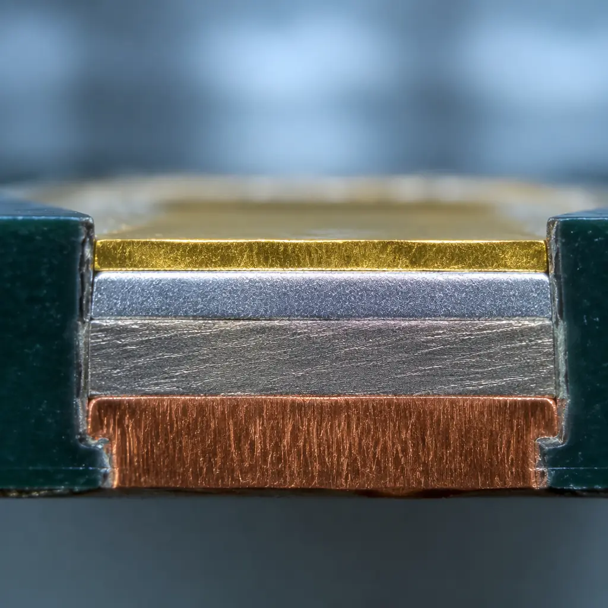
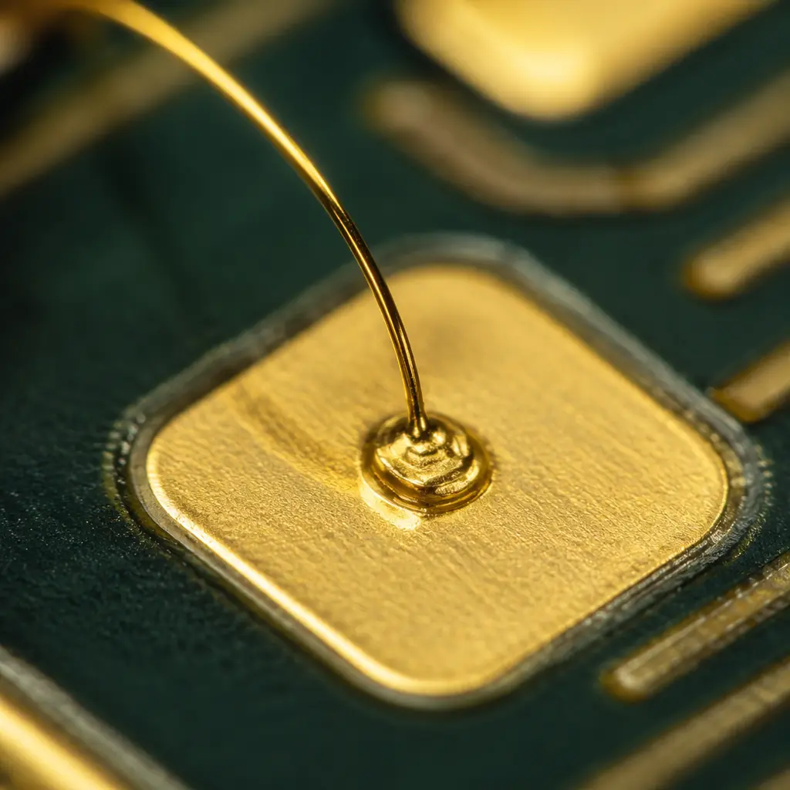
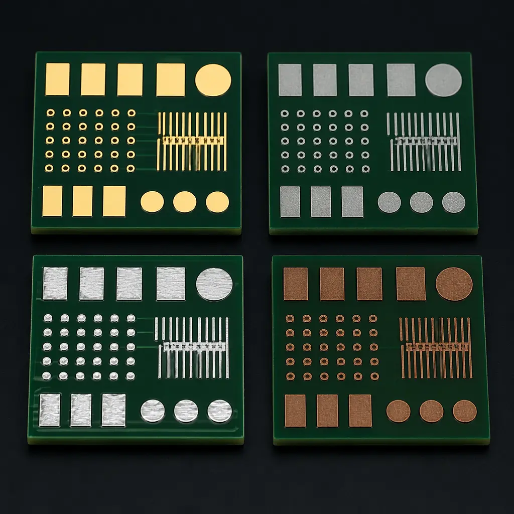

A PCB surface finish is a few microns of metal or organic coating, but it determines everything downstream: solder joint reliability, wire bond yield, shelf life before assembly, and insertion loss at microwave frequencies. For procurement managers and hardware engineers, selecting the wrong finish creates a cascade of problems — brittle intermetallics, creeping corrosion, or boards that cannot be assembled because the finish degraded in storage.
At Huaxing PCBA, we process all six major surface finishes across 8 SMT lines in our Shenzhen facility, supporting everything from high-volume consumer OSP boards to ENEPIG-finished RF modules with gold wire bonds. This guide draws on real production experience — not datasheet theory — to help you select the optimal finish for wire bonding, high-frequency performance, and extended shelf life.

The Six Surface Finishes at a Glance
Before diving into application-specific recommendations, here is the full comparison of the six finishes covered in this guide. Use this table as your quick-reference decision tool.
| Finish | Typical Thickness | Shelf Life | Relative Cost | Flatness | Wire Bond | Best For |
|---|---|---|---|---|---|---|
| ENEPIG | Au 0.05–0.15μm / Pd 0.05–0.1μm / Ni 3–6μm | 12+ months | 1.5× | Excellent | Al, Au, Cu | Mixed SMT + wire bond, zero black-pad risk |
| ENIG | Au 0.05–0.12μm / Ni 3–6μm | 12 months | 1.2× | Excellent | Al, Au | Fine-pitch BGAs, general high-reliability |
| Immersion Silver | 0.15–0.5μm | 6–12 months | 1.1× | Excellent | Al | RF/microwave, high-speed digital |
| Immersion Tin | 0.8–1.2μm | 6 months | 1.1× | Excellent | No | Press-fit connectors, flat-surface needs |
| HASL (Lead-Free) | 1–40μm | 12 months | 1.0× (baseline) | Poor | No | Through-hole dominant, coarse-pitch SMT |
| OSP | 0.2–0.5μm | 6 months | 0.95× | Excellent | No | High-volume consumer, quick-turn assembly |
Key Insight: Cost should not be the only driver. The finish you select directly impacts assembly yield, field reliability, and whether your board can even be manufactured as designed. For wire-bonded designs, the choice narrows to exactly two finishes: ENEPIG and ENIG.
ENEPIG: The Universal Wire Bonding Finish
Electroless Nickel Electroless Palladium Immersion Gold (ENEPIG) is the premium surface finish for applications that demand both SMT assembly and wire bonding on the same board. The palladium layer — just 0.05 to 0.1μm thick — sits between the nickel and gold, acting as a diffusion barrier that eliminates the black-pad failure mechanism entirely.
ENEPIG is the only finish that supports all three major wire bond types: aluminum wedge bonding, gold ball bonding, and copper wire bonding. This makes it the default choice for mixed-technology modules — think RF front-end modules, sensor packages with bare die, and advanced system-in-package designs where an ASIC sits alongside passive SMT components.
Triple Wire Bond Capability — Al, Au, and Cu
The palladium layer provides a stable bonding surface for aluminum wire (common in power devices), gold ball bonds (RF and high-reliability ICs), and copper wire (cost-driven semiconductor packaging). No other finish supports all three. For designs that combine a wire-bonded GaN power amplifier with standard SMT passives, ENEPIG is the only viable option — selective plating alternatives cost significantly more and introduce registration tolerance issues at fine pitches.
Zero Black-Pad Risk
Black pad — hyper-corrosion of the nickel layer that produces brittle, unreliable solder joints — is ENIG's well-documented failure mode. ENEPIG eliminates it by inserting the palladium barrier. The phosphorus content in the nickel bath remains the same (7–9% is the safe zone), but the palladium prevents the galvanic corrosion reaction that causes black pad. For IPC Class 3 reliability, where a single field failure is unacceptable, this alone justifies the 25% cost premium over ENIG.
12+ Month Shelf Life — Longest of the Flat Finishes
The gold outer layer protects the palladium and nickel from oxidation, giving ENEPIG the longest shelf life among flat finishes at 12 months or more under controlled storage (30°C, 60% RH maximum). This is critical for low-to-medium volume industrial and medical products where boards may sit in inventory for months before final assembly. Compare this to the 6-month shelf life of OSP — miss the window by a week and the entire batch may need rework or scrap. See our PCB cost factors guide for how shelf-life decisions affect total cost of ownership.
Excellent Fine-Pitch Performance
Like ENIG, ENEPIG delivers surface planarity within ±2μm — essential for 0.4mm and 0.3mm pitch BGAs, QFNs, and LGAs. The flat surface ensures uniform solder paste deposition and consistent standoff heights across all pads, which directly impacts assembly yield. Our PCB assembly process guide covers the DFM requirements for fine-pitch SMT in detail.
Cost Premium That Pays for Itself
ENEPIG costs approximately 50% more than HASL and 25% more than ENIG. But for wire-bonded designs, the alternative is selective ENIG + soft gold plating — a multi-step process that requires two plating baths, masking, and registration steps that often cost more than a full-board ENEPIG finish. When you factor in the eliminated selective plating steps, ENEPIG becomes the cost-effective choice, not the premium one. Our ENIG vs HASL comparison breaks down the cost structure of each finish in more detail.
When to Choose ENEPIG: Your design includes wire-bonded bare die alongside SMT components. You need aluminum, gold, or copper wire bond capability. Zero tolerance for black-pad failure. Shelf life beyond 12 months is required. The cost premium is offset by eliminating selective plating.
ENIG: The Gold Standard for Fine-Pitch SMT
Electroless Nickel Immersion Gold (ENIG) is the most widely specified surface finish for high-reliability SMT assemblies — and for good reason. Its flat, solderable surface supports fine-pitch components, its 12-month shelf life gives procurement flexibility, and its cost (roughly 1.2× HASL baseline) is manageable for most mid-volume programs.

Flat Surface for Sub-0.5mm Pitch Components
The nickel underlayer (3–6μm) provides a hard, planar surface that keeps solder pads coplanar to within ±2μm. This is critical for QFN packages and fine-pitch BGAs where any height variation across pads causes opens or head-in-pillow defects. Our factory data from over 50,000 assemblies shows ENIG boards have a 0.4% lower defect rate on 0.4mm-pitch QFNs compared to HASL — a small-sounding difference that translates to tens of thousands of dollars in rework at medium volumes. For guidance on avoiding these defects at the design stage, see our PCB stackup design guide.
Aluminum and Gold Wire Bond Compatible
ENIG supports both aluminum wedge bonding and gold ball bonding, making it suitable for designs with wire-bonded components that do not require copper wire capability. The gold surface provides an excellent bonding interface, but process control is critical — the gold thickness must stay below 0.12μm to avoid brittle Au-Sn intermetallics in the solder joints. If your design includes copper wire bonding, step up to ENEPIG.
12-Month Shelf Life with Simple Storage
ENIG boards stored in vacuum-sealed packaging with desiccant maintain full solderability for 12 months — double the shelf life of OSP and comparable to HASL but with none of HASL's flatness problems. For programs with staggered production runs or spare-board inventory, this flexibility reduces waste and eliminates the cost of rush replenishment orders.
Managing Black-Pad Risk Through Process Control
Black pad remains ENIG's Achilles' heel, but it is almost entirely preventable through tight process control. The root cause is excessive phosphorus content in the nickel layer (>10%) combined with overly aggressive immersion gold chemistry. At Huaxing, we maintain phosphorus at 7–9% and perform solderability testing on every batch per IPC-J-STD-003 standards. We have not seen a confirmed black-pad failure in over three years of production.
Moderate Insertion Loss — Acceptable Below 10 GHz
ENIG's nickel layer has higher resistivity than copper, which increases insertion loss at microwave frequencies due to the skin effect. Below 10 GHz, the impact is typically less than 0.1 dB per inch — acceptable for most digital and sub-6 GHz RF applications. Above 10 GHz, the nickel layer's contribution becomes measurable, and Immersion Silver or ENEPIG become better choices. Our RF PCB design and manufacturing guide covers material and finish selection for high-frequency applications in depth.
Immersion Silver: The High-Frequency Specialist
Immersion silver has carved out a specific and growing niche: RF and high-speed digital boards operating above 10 GHz where every fraction of a decibel of insertion loss matters. Silver's electrical conductivity (6.3 × 10⁷ S/m) is the highest of any metal — 6% better than copper — and at microwave frequencies where current flows only in the outermost 0.5–2μm (the skin effect), this thin silver layer delivers measurably better performance than ENIG.
Lowest Insertion Loss Among Solderable Finishes
At 20 GHz, a microstrip line on immersion silver typically shows 0.15–0.3 dB less insertion loss per inch compared to the same geometry on ENIG. This difference comes from eliminating the lossy nickel layer — in immersion silver, the silver sits directly on copper, so the skin-effect current flows entirely through the two most conductive metals. For a 5G millimeter-wave phased array with 50 antenna elements and corporate feed networks spanning several inches, this can mean the difference between meeting link budget and falling short.
Aluminum Wire Bond Compatible
Immersion silver supports aluminum wedge bonding, which covers the most common wire-bond use case in RF power amplifiers and discrete RF transistors. However, it does not support gold or copper ball bonding. For designs requiring those bond types, ENEPIG is required.
Creep Corrosion: The Critical Environmental Constraint
Silver's primary vulnerability is creep corrosion — dendritic silver sulfide growth that can bridge adjacent pads in sulfur-rich environments. This is not a hypothetical risk: industrial environments with rubber processing, paper mills, or geothermal activity routinely contain enough atmospheric sulfur to trigger creep corrosion within months. If your product operates in such environments, specify immersion silver with an anti-tarnish overcoat (typically a thin organic film), use conformal coating post-assembly, or switch to ENIG/ENEPIG. For conformal coating guidance, see our PCB conformal coating guide.
6–12 Month Shelf Life with Proper Packaging
Immersion silver's shelf life is 6 months in standard packaging, extendable to 12 months with sulfur-free vacuum-sealed bags and desiccant. This is acceptable for most production schedules but requires more disciplined inventory management than ENIG or ENEPIG. Plan to assemble within 3 months of receipt for best results — silver tarnish, even if mild, increases contact resistance and can cause wire-bond adhesion issues.
Immersion Tin: The Press-Fit Specialist
Immersion tin occupies a narrow but important niche: boards using press-fit connectors and backplane applications where a flat, solderable surface with no gold embrittlement risk is required. The tin layer (0.8–1.2μm) is thicker than OSP and provides a metallic surface compatible with press-fit technologies — something OSP cannot do reliably.
However, immersion tin has two significant limitations. First, it is susceptible to tin whisker growth — microscopic conductive filaments that can cause shorts, especially in fine-pitch designs. Mitigation requires careful process control (matte tin morphology, post-plate annealing) and is never fully eliminated. Second, immersion tin has a 6-month shelf life due to copper-tin intermetallic growth that consumes the pure tin layer over time. For most designs, ENIG or ENEPIG are more robust alternatives unless press-fit compatibility is the primary requirement.
HASL: Low Cost, Proven, but Limited
Hot Air Solder Leveling (lead-free, SAC305 alloy) is the lowest-cost finish and remains viable for through-hole-dominant designs and coarse-pitch SMT (≥0.65mm pitch). Its thick solder coating (1–40μm) provides a forgiving soldering surface and is visually easy to inspect — you can see whether the pads are properly coated at a glance.
The limitation is surface flatness. HASL produces a naturally domed surface that varies ±10–15μm across a pad — unacceptable for QFN, BGA, and fine-pitch components below 0.5mm. It also cannot support wire bonding of any type. For designs with only through-hole and SOIC-level SMT components, HASL is perfectly adequate. For anything with a BGA or QFN, move to a flat finish. See our detailed ENIG vs HASL comparison for application-specific selection guidance.
OSP: The High-Volume, Time-Sensitive Option
Organic Solderability Preservative (OSP) is the default finish for high-volume consumer electronics where boards are assembled within days or weeks of fabrication. It is the lowest-cost flat finish (0.95× HASL baseline) and provides excellent solderability for a single reflow cycle.
The constraints are severe: 6-month maximum shelf life (realistically 3–4 months for reliable results), the coating burns off during the first reflow (requiring second-side assembly within 24 hours for double-sided boards), and it cannot be visually inspected for integrity. OSP also does not support wire bonding or press-fit connectors. For quick-turn consumer products with single-sided SMT and no long-term inventory, OSP is the right choice. For anything else, the shelf-life risk outweighs the cost savings. Our PCB materials guide covers how substrate and finish choices interact in multi-layer designs.

Decision Matrix: Which Finish for Your Application?
Choose ENEPIG if: your design includes wire-bonded bare die, you need Al/Au/Cu wire bond capability, zero black-pad risk is mandatory, shelf life beyond 12 months is needed, or you are building mixed-technology RF/sensor modules.
Choose ENIG if: fine-pitch SMT (≤0.5mm BGAs/QFNs) is your primary concern, 12-month shelf life is sufficient, Al or Au wire bonding is needed (but not Cu), frequency is below 10 GHz, and cost is a secondary concern to reliability.
Choose Immersion Silver if: RF/microwave above 10 GHz is your application, insertion loss is a primary performance metric, aluminum wire bonding is needed, the operating environment is low-sulfur, and boards will be assembled within 6 months.
Choose Immersion Tin if: press-fit connectors are the primary interconnect technology, a flat metallic surface is required, and a 6-month assembly window is acceptable.
Choose HASL if: through-hole is the dominant component type, SMT pitch is ≥0.65mm, wire bonding is not required, and cost is the primary driver.
Choose OSP if: high-volume consumer production with single-sided SMT, assembly within 4 weeks of fabrication, wire bonding is not required, and the lowest possible cost is the priority.
Making the Final Call
Surface finish selection sits at the intersection of electrical performance, mechanical reliability, assembly logistics, and cost. The "best" finish does not exist — only the right finish for your specific combination of component technology, frequency requirements, production schedule, and operating environment.
At Huaxing PCBA, we process all six finishes in-house with the same quality systems and process controls. Our free DFM review includes a surface finish recommendation based on your Gerber files and BOM — we will tell you if your specified finish is suboptimal for your design and explain why with data, not opinion. Whether you are designing a wire-bonded GaN amplifier module, a 28 GHz phased-array antenna board, or a high-volume IoT sensor, we have the in-house capability to deliver the right finish at the right cost.
For a deeper dive into related topics, explore our RF PCB design guide, PCB testing and inspection reference, or PCB cost factors analysis. Or contact our engineering team for a project-specific consultation — we respond within 24 hours with a detailed quote and DFM feedback.